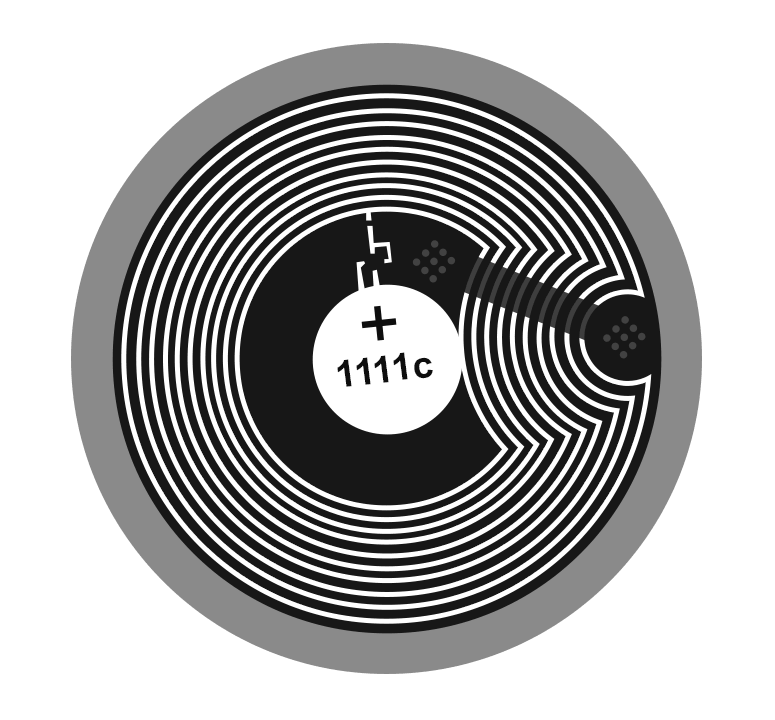
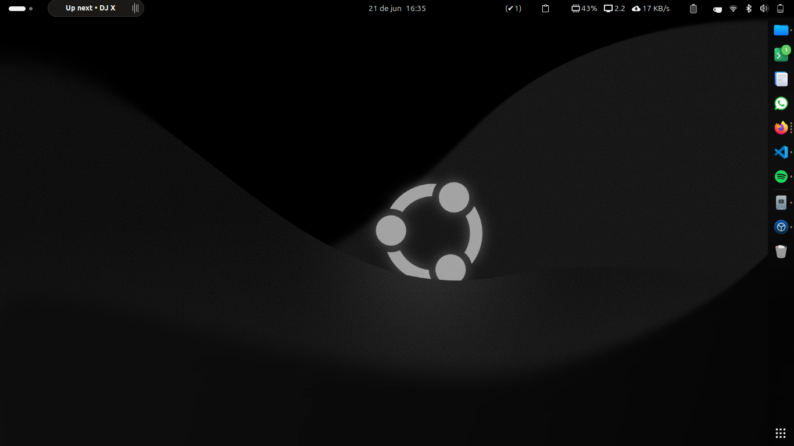

Ética en Investigación con Sujetos Humanos
Universidad del Valle de Guatemala — CCSS
Curso en línea de 8 horas organizado por el Comité de Ética de Investigación de la Facultad de Ciencias Sociales.
Conectando el mundo digital con el real.
Sitios web, sistemas y herramientas digitales construidas para clientes reales — desde emprendimientos hasta sistemas en producción.
Creo software funcional con bases de datos, que además se ve bien: sistemas que de verdad se usan para registrar, tomar datos y ordenar información, con un diseño propio y código hecho a la medida de tu proyecto.
"De la idea a la pantalla — con identidad propia y código a la medida."
No solo páginas estáticas — esto es lo que se puede lograr con código hecho a la medida.
Motor minimax nivel 4 con poda alfa-beta, tablas posicionales y respuesta en <200ms. Completamente en el navegador, sin servidor.
Cada cuadro es algo que puedo poner en tu página. Todo hecho con HTML, CSS y JavaScript, sin librerías.
Arrastra las piezas: se sueltan con inercia y rebotan en las orillas.
Elige uno y todo el playground cambia de color suavemente.
Pasa el mouse y haz clic en cada uno.
Sacude la página completa. Sube la fuerza bajo tu propio riesgo.
Mueve el mouse encima: la tarjeta se inclina y refleja la luz.
O haz clic en cualquier parte del cuadro.
Hola mundo
PASA EL MOUSE
Letras que ondulan y texto que se descifra.
Contadores que suben suavemente, ideales para mostrar resultados.
Mueve el mouse: los puntos huyen y se conectan. Mantén presionado para atraerlos.
Hay un mensaje escondido aquí. Encuéntralo. Las webs pueden guardar secretos.
Pasa el mouse o el dedo por la oscuridad.
Arrástralo para girarlo. Al soltarlo sigue girando solo.
Raspa con el mouse o el dedo.
Las letras caen, chocan y se apilan. Agárralas y lánzalas.
Los ojos siguen tu mouse por toda la página. Haz clic y parpadean.
Así funciona un sistema de registro: escribes, subes una foto y se guarda. Aquí se guarda solo en tu navegador; en un proyecto real va a una base de datos.
Todavía no hay tarjetas. ¡Sé la primera persona en registrarse!
Una web puede hablar con internet, con tu cámara, tu micrófono, tu control de videojuegos y hasta con tags NFC. Todo esto funciona en vivo, desde tu navegador.
Datos de Open-Meteo, actualizados cada hora.
Cambia el monto y se convierte al momento.
Su posición real, actualizada cada 5 segundos.
Leídos en vivo desde GitHub.
Música incrustada directo en la página.
Habla o aplaude y mira tu voz. El audio nunca sale de tu navegador.
Filtros en tiempo real. Nada se graba ni se envía.
Pulsa "Escuchar" y di un color: rojo, azul, verde, rosa, amarillo o morado.
En celular la bolita rueda al inclinarlo. En compu, sigue tu mouse.
Funciona en Chrome para Android. Acerca un tag al teléfono.
La web puede usar funciones de tu teléfono.
Apps propias que uso en el día a día — hidratación, fitness, y lo que se me ocurra.
El éxito es del más astuto.
Universidad del Valle de Guatemala — CCSS
Curso en línea de 8 horas organizado por el Comité de Ética de Investigación de la Facultad de Ciencias Sociales.
Universidad del Valle de Guatemala
Principios de usabilidad, diseño centrado en el usuario, evaluación de interfaces y prototipado de experiencias digitales.
INTECAP — Nivel Intermedio
Certificación tras completar satisfactoriamente el programa de formación en desarrollo web. Aplicada en este portafolio.
Proyectos random, propuestas sin sentido, curiosidades y brainrot.
Tags NFC: de lo físico a lo digital con un toque.

Un chip NFC no tiene batería, no necesita app y no ocupa espacio. Acercas el teléfono y pasa algo. Conectado a una web con base de datos, cada toque puede contar, registrar o llevar a la persona justo a donde tiene que ir.
Compatible con NTAG213, NTAG215, NTAG216 — los mismos que usamos en el Flipper Zero. Yo te genero el archivo, tú lo grabas con cualquier app NFC.
Un dispositivo del tamaño de tu mano que habla con el mundo inalámbrico que te rodea — radio, NFC, infrarrojo y USB.
Todas mis apps corren 100% en tu navegador — sin servidores, sin bases de datos externas, sin rastreo. Aquí tienes dos herramientas que lo demuestran, funcionando localmente en este mismo momento.
Generado localmente — nunca sale de tu dispositivo.
┌──(root㉿kali)-[~/tools/passwd-gen]
└─# generate --interactive
Análisis de patrones — sin depender de servidores externos.
URL Safety Checker — análisis de patrones locales
Basado en patrones locales — no sustituye Google Safe Browsing.
Todo lo hago sobre Ubuntu.

$ cat dato-curioso.md
# Todo corre sobre Ubuntu
Todos mis proyectos los construyo en Linux. Algunas extensiones GNOME que uso para volver locas las pantallas (y a veces literalmente quemarlas un poco):
¿Por qué Linux y no Windows para esto? Porque el kernel es abierto: puedes cambiarlo. Mainline, Liquorix, Xanmod, Zen — cada uno prioriza algo distinto (latencia, throughput, eficiencia), y tú eliges. En Windows el kernel es una caja cerrada; en Linux es una pieza más que puedes intercambiar según lo que necesites.
$ _